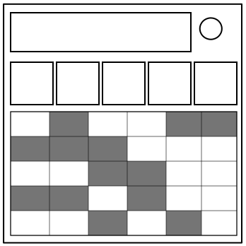

On the Subject of Curriculum
Crap! You forgot to register for your classes next semester!
Organize these five classes so no classes overlap.
Assign each character of the serial number to a column in the table and make sure the right class is set on the module.
| Serial | 1st | 2nd | 3rd | 4th | 5th |
|---|---|---|---|---|---|
| Even | Phy. | Phi. | Pro. | Lin. | Log. |
| Odd | Mat. | Lit. | Eco. | Man. | Ele. |
That’s not all—a special effect needs to be accounted for. Use the first one that applies:
| Condition | Effect |
|---|---|
| Last digit = 0 | None on Tue. |
| ≥ 5 ports | None on last of every day |
| Empty plate | None on Thu. and Fri. |
| No indicators | None on first of every day |
| ≥ 3 batteries | None on second half of Mon. and Wed. |
| Else | None on second half of Fri. |
Change the sections so there aren’t any red boxes, unless there are no strikes and there is at least 1 module solved (in which case exactly 1 red box that doesn’t break the special effect is allowed).